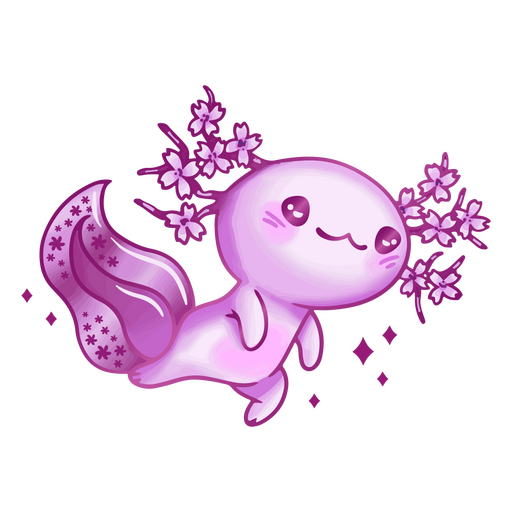

Axolotilandia
Caracteristicas de Axolotes
Lista hecha por Daniela Paniagua
Cosas que comen los axolotes
- Microalgas
- Alga espirulina
- Nauplios de artemia salina
- Lombriz de tierra
Enfermedades de los axolotes
- Origen parasitario
- Origen Bacteriano
- Origent viral
Mitologia
Hace mucho tiempo, los dioses decidieron reunirse en Teotihuacan para crear el universo ofreciendo su propia vida en sacrificio. Deidades como Huitzilopochtli, Xochipilli y Tezcatlipoca, entre otros, se arrojaron al fuego, sin embargo, uno de ellos no quería hacerlo, pues tenía miedo. Este era Xólotl, el dios perro y gemelo de Quetzalcóatl. Xólotl no quería arder, aunque su inmolación era importante para dar movimiento a los astros y, así, concluir la invención del universo. Entonces tomó valor y huyó velozmente de Teotihuacan hacia rumbo desconocido. Los dioses estaban enojados ante tal acción, por lo que le ordenaron al Viento encontrarlo para que cumpliera el sacrificio. La tarea no era tan fácil, pues Xólotl empezó a transformarse en diversas especies para que no lo hallaran. La primera forma que adoptó fue la de un guajolote, pero al verse amenazado por la cercanía del viento, se convirtió en maguey. Luego tomó la figura de un perro xoloitzcuintle, pero de nuevo fue rastreado, por lo que alteró su cuerpo para lucir como una planta de maíz. A pesar de todas las transformaciones, Xólotl era localizado por el enviado de los dioses. Al no tener escapatoria, decidió arrojarse al lago convirtiéndose en un axolote.
Anatomia
El ajolote posee características de la salamandra, mide en promedio 23 centímetros, su cuerpo es gelatinoso, tiene cuatro patas, una cola larga, ojos pequeños y una boca grande de apariencia sonriente.
Conservacion
Mantener su entorno con agua de muy buena calidad. Prepararle un acuario amplio de 70-100 cm, y de unos 15 cm de profundidad, que le permita nadar libremente. Procurarle un hábitat adecuado en un ambiente con poca luz. Cambiar parcialmente el agua y retirar los restos de suciedad del fondo cada 10-12 días.
Lee mas aquiFormulario de identificacion de Axolotes
Que edad tiene tu ajolote?